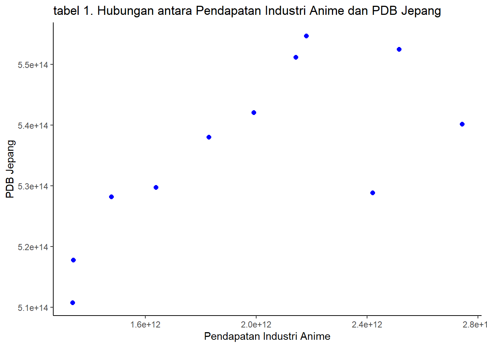
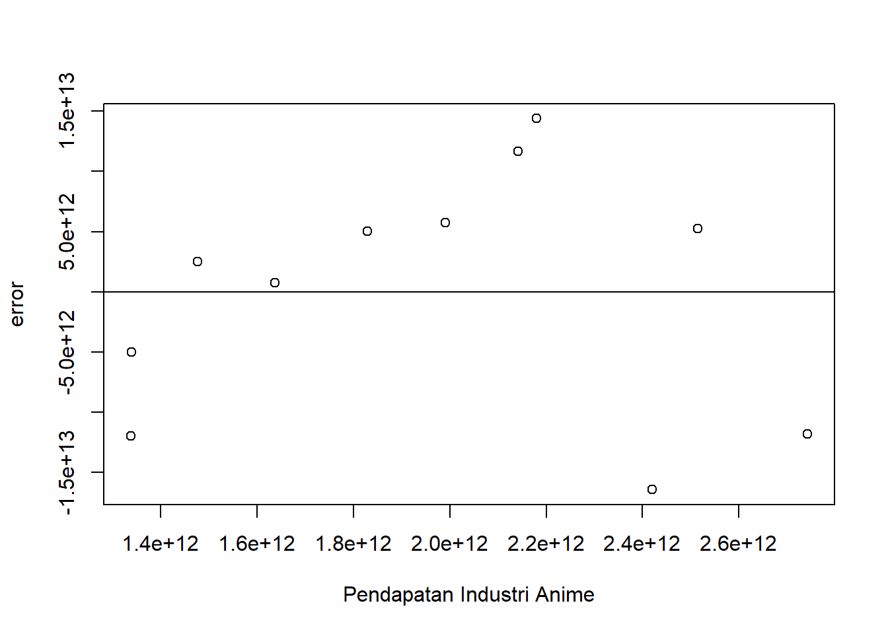
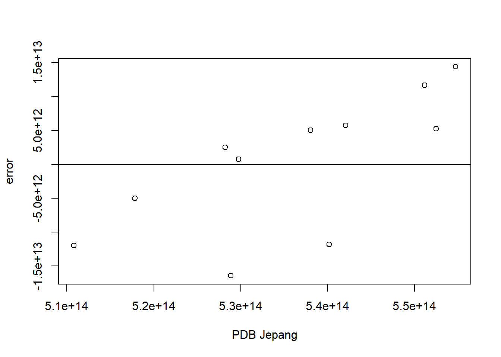

library(tidyverse)
library(readxl)
library(dplyr)Pengaruh Industri Anime Terhadap Pertumbuhan PDB Jepang Pada Periode 2011-2021
Metode Penelitian Politeknik APP Jakarta

1 Pendahuluan
1.1 Latar belakang
Saat ini Jepang dikenal memiliki kekuatan ekonomi terbesar kedua di Asia dan ketiga di dunia, serta memiliki hubungan diplomatik hampir dengan semua negara berdaulat di dunia. Kuatnya Perekonomian Jepang dipengaruhi oleh berbagai sektor, namun sektor industri yang paling berpengaruh terhadap perekonomian Jepang. Salah satu contoh sektor industri yang mampu mendongkrak roda perekonomian Jepang ialah Industri Anime.
Anime merupakan salah satu pesona Jepang dan budaya populer yang sampai sekarang masih sangat disukai di seluruh dunia. Anime telah menjadi salah satu produk ekspor budaya terbesar Jepang dengan popularitas yang tinggi di seluruh dunia pada beberapa tahun terakhir. Anime juga telah membawa pendapatan yang signifikan melalui penjualan hak cipta, merchandise, dan produk terkait lainnya. Hal ini dikarenakan oleh daya tarik anime yang unik dan beragam, seperti alur cerita yang menarik, karakter yang penuh warna, grafis dan animasi yang khas, serta tema yang dapat memikat perhatian berbagai kalangan. Dalam konteks diplomasi budaya, anime menjadi salah satu bentuk ekspresi budaya Jepang yang penting. Anime dapat menjadi sarana untuk mempromosikan budaya Jepang ke seluruh dunia, memperkenalkan nilai-nilai Jepang, serta membangun citra positif terhadap Jepang sebagai negara yang kaya akan budaya (Toi, 2020).
Selain sebagai bentuk upaya ekspansi ke luar negeri, Industri anime juga membawa banyak dampak baik bagi kegiatan perekonomian di dalam negeri. Banyak perusahaan-perusahaan yang berkembang untuk memproduksi anime. Proses pembuatan anime dapat menciptakan lapangan pekerjaan dalam negeri. Hal tersebut dikarenakan dalam membuat anime membutuhkan animator, desainer animasi, seiyuu (pengisi suara), komposer musik, manajemen produksi, dan masih banyak lagi. Produksi anime juga memberininspirasi bagi industri-industri kreatif yang lain seperti manga, video game, merchandise, serta fashion untuk budaya cosplay.
1.2 Ruang lingkup
Dalam penelitian ini penulis mengambil objek penelitian dari Anime Industry Data AJA (The Association of Japanese Animation) dan WDI (World Development Indicators). Ruang lingkup penelitian ini terdapat 2 variabel antara lain nilai Pendapatan Industri Anime Jepang dan nilai Produk Domestik Bruto (PDB) Jepang. Pendapatan Industri Anime adalah total pendapatan dari pendapatan Anime (Animasi) Video, TV, Movie , Animasi Online, Ekspor, dan sebagainya yang terkait dengan industri Anime. Data yang digunakan adalah data yang bersifat time series yaitu dalam periode 2011-2021 dengan satuan yen Jepang (¥).
1.3 Rumusan masalah
- Apakah Industri Anime memiliki pengaruh terhadap PDB Jepang?
- Bagaimana hubungan antara Industri Anime Jepang dengan pertumbuhan PDB Jepang?
1.4 Tujuan dan manfaat penelitian
Penelitian ini dilakukan bertujuan untuk mengetahui pengaruh Industri Anime sebagai salah satu Budaya Populer Jepang terhadap PDB Jepang, serta mengetahui hubungan antara Industri Anime dengan PDB Jepang.
Manfaat dari adanya penelitian ini ialah memberikan pemahaman yang lebih baik tentang kontribusi industri anime terhadap pertumbuhan ekonomi Jepang kepada peneliti dan pembaca atau masyarakat luas yang tertarik dengan industri anime dan pertumbuhan ekonomi Jepang.
1.5 Package
Packages yang digunakan pada penelitian ini antara lain sebagai berikut:
2 Studi pustaka
2.1 Anime
Anime adalah animasi asal Jepang yang digambar menggunakan tangan seperti menggambar dengan manual di kertas dan teknologi komputer yang dapat mempercepat proses pembuatan anime dan menciptakan efek CG. Kata anime (アニメ) adalah singkatan dari animeeshon （アニメーション）yang berasal dari bahasa Inggris, yaitu animation. Terlepas dari asal usul animenya, semua jenis animasi dianggap anime di Jepang. Namun di luar Jepang, kata anime lebih sering digolongkan secara spesifik sebagai animasi yang dibuat di Jepang (Budianto, 2015: 179).
Industri Anime merupakan industri kreatif yang berfokus pada produksi dan distribusi konten animasi Jepang (Anime)
2.2 Pertumbuhan Ekonomi & Produk Domestik Bruto
Pertumbuhan ekonomi menurut Dr. Joko Untoro (2010:39) merupakan perkembangan kegiatan dalam perekonomian yang menyebabkan barang dan jasa yang diproduksi dalam masyarakat bertambah dan kemakmuran masyarakat meningkat dalam jangka panjang.
Produk Domestik Bruto (PDB) menurut Imamul Arifin & Gina Hadi W (2009:11) merupakan Indikator yang digunakan untuk mengetahui pertumbuhan ekonomi suatu Negara.
3 Metode penelitian
3.1 Data
Berikut data yang digunakan sebagai objek penelitian, yaitu data Pendapatan atau Nilai Penjualan Industri Anime (Animasi Jepang) dan PDB Jepang dalam satuan Yen Jepang (¥) pada periode 2011-2021 :
| Tahun | PDB (Y) | Pendapatan Industri Anime (X) |
|---|---|---|
| 2011 | 510.795.175.493.000 | 1.337.500.000.000 |
| 2012 | 517.817.337.272.000 | 1.339.500.000.000 |
| 2013 | 528.200.093.617.000 | 1.476.900.000.000 |
| 2014 | 529.764.651.420.000 | 1.637.100.000.000 |
| 2015 | 538.032.300.000.000 | 1.829.200.000.000 |
| 2016 | 542.088.131.379.000 | 1.990.300.000.000 |
| 2017 | 551.169.905.966.000 | 2.142.100.000.000 |
| 2018 | 554.716.083.665.000 | 2.180.700.000.000 |
| 2019 | 552.485.186.424.000 | 2.514.500.000.000 |
| 2020 | 528.846.534.864.000 | 2.419.900.000.000 |
| 2021 | 540.177.005.075.000 | 2.742.500.000.000 |
Baca Data
#import dataset
setwd("E:/Metopel UAS_2023")
library(readxl)
dat<-read_excel("latihan.xlsx")
head(dat)# A tibble: 6 × 3
Tahun PIA PDB
<dbl> <dbl> <dbl>
1 2011 1337500000000 5.11e14
2 2012 1339500000000 5.18e14
3 2013 1476900000000 5.28e14
4 2014 1637100000000 5.30e14
5 2015 1829200000000 5.38e14
6 2016 1990300000000 5.42e14PIA pada data diatas adalah singkatan dari Pendapatan Industri Anime.
Penelitian ini menggunakan data Pendapatan Industri Anime Jepang yang bersumber dari Anime Industry Data AJA (The Association of Japanese Animation), situs web resmi AJA yang menyediakan “laporan tentang Industri Anime Jepang” yang diterbitkan oleh AJA setiap tahunnya. Laporan tersebut berisi informasi terbaru tentang industri animasi Jepang dan bisnisnya. Laporan ini hanya tersedia dalam bahasa Jepang, namun AJA menyediakan versi ringkasnya untuk pembaca non-Jepang.
Data lain yang digunakan pada penelitian ini adalah data PDB Jepang (Constant LCU) yang bersumber dari World Development Indicators (WDI). WDI merupakan basis data yang dikelola World Bank, sebuah lembaga internasional. WDI memiliki lebih dari 1000 indikator penting dari sekitar 200 negara dengan rentang waktu yang bervariasi.
library("ggplot2")
library("readxl")
library("dplyr")
ggplot(data=dat,aes(x=PIA,y=PDB))+
geom_point(color="blue",size=2)+
labs(title="tabel 1. Hubungan antara Pendapatan Industri Anime dan PDB Jepang",
x="Pendapatan Industri Anime",
y="PDB Jepang")+
theme_classic()
setwd("E:/Metopel UAS_2023")
library(readxl)
dat<- read_excel("latihan.xlsx")
View(dat)
reg1<-lm(PDB~PIA,data = dat)
dat$u<-resid(reg1)
plot(dat$PIA,dat$u,xlab = "Pendapatan Industri Anime",ylab = "error")
abline(h=0)
Plot pengaruh error terhadap Pendapatan Industri Anime
library(readxl)
dat<- read_excel("latihan.xlsx")
View(dat)
reg1<-lm(PDB~PIA,data = dat)
dat$u<-resid(reg1)
plot(dat$PDB,dat$u,xlab = "PDB Jepang",ylab = "error")
abline(h=0)
Plot pengaruh error terhadap PDB Jepang
3.2 Metode analisis
Metode yang dipilih adalah regresi univariat atau Ordinary Least Square (OLS) dengan 1 variabel independen. Penelitian ini bermaksud mencari hubungan antara Pendapatan Industri Anime (X) dengan PDB Jepang (Y). Spesifikasi yang dilakukan adalah:
\[ y_{t}=\beta_0 + \beta_1 x_t+\mu_t \] di mana \(y_t\) adalah PDB Jepang dan \(x_t\) adalah Pendapatan Industri Anime .
4 Pembahasan
4.1 Pembahasan masalah
| Variable | Coefficient | Std.Error | t-value | Prob (.) |
|---|---|---|---|---|
| Intercept | 4.950e+14 | 1.400e+13 | 35.348 | 5.74e-11 |
| PIA (x) | 2.080e+01 | 6.939e+00 | 2.998 | 0.015 |
| R Squared | 0.4996 | |||
| Adjusted R-Squared | 0.444 | |||
| F-Statisctic | 8.985 | |||
| Prob (F-Statistic) | 0.01502 |
Hasil regresi yang telah didapat dimasukan ke dalam rumus persamaan yang ada sehingga menjadi:
\[ Y=4.950 +2.080X \]
Industri Anime (Animasi Jepang) Berpengaruh positif terhadap peningkatan pertumbuhan ekonomi pada PDB Jepang dikarenakan variabel X yang positif. Jika diasumsikan setiap kenaikan Pendapatan Industri Anime 1, maka PDB Jepang akan meningkat sebesar 2.080. Namun, jika Pendapatan Industri Anime = 0, PDB Jepang akan menurun sebesar 4.950.
Nilai Adjusted R-Squared 0.444 menunjukkan bahwa sebesar 44.4% variabel dependen dapat dijelaskan oleh model regresi. Nilai F-Statistic yang tinggi yaitu sebesar 8.985 dan nilai p-value yang rendah yaitu sebesar 0.01502 menunjukkan bahwa model secara keseluruhan memiliki kecenderungan untuk signifikan. Hal ini berarti bahwa Industri Anime berpengaruh secara signifikan terhadap PDB Jepang.
4.2 Analisis masalah
Hasil regresinya adalah
reg1<-lm(PDB~PIA,data=dat)
summary(reg1)
Call:
lm(formula = PDB ~ PIA, data = dat)
Residuals:
Min 1Q Median 3Q Max
-1.645e+13 -8.419e+12 2.517e+12 5.473e+12 1.439e+13
Coefficients:
Estimate Std. Error t value Pr(>|t|)
(Intercept) 4.950e+14 1.400e+13 35.348 5.74e-11 ***
PIA 2.080e+01 6.939e+00 2.998 0.015 *
---
Signif. codes: 0 '***' 0.001 '**' 0.01 '*' 0.05 '.' 0.1 ' ' 1
Residual standard error: 1.062e+13 on 9 degrees of freedom
Multiple R-squared: 0.4996, Adjusted R-squared: 0.444
F-statistic: 8.985 on 1 and 9 DF, p-value: 0.01502Setiap kenaikan Pendapatan Industri Anime dengan diasumsikan nilainya 1, maka dapat meningkatkan PDB Jepang sebesar 2.080. Namun, jika Pendapatan Industri Anime = 0, PDB Jepang dapat menurun sebesar 4.950.
5 Kesimpulan
Berdasarkan pada hasil penelitian ini dapat disimpulkan bahwa Industri Anime memiliki pengaruh yang positif terhadap PDB Jepang. Hal ini dapat terlihat dari hasil analisis regresi yang menunjukkan bahwa setiap kenaikan Pendapatan Industri Anime sebesar 1, maka akan berdampak pada peningkatan PDB Jepang sebesar 2.080. Karena produktivitas dalam Industri Anime di Jepang yang tinggi, maka arus modal yang masuk ke dalam negeri juga meningkat. Namun, jika produktivitas dalam Industri Anime menurun sehingga nilai Pendapatan Industri Anime mencapai nol, maka akan berpengaruh negatif terhadap PDB Jepang yaitu penurunan sebesar 4.950.
Industri Anime bukanlah satu-satunya faktor yang sepenuhnya mempengaruhi PDB Jepang, yang berarti PDB Jepang juga dipengaruhi oleh faktor lain. Meskipun begitu, hasil regresi menunjukkan bahwa Industri Anime memberikan pengaruh yang signifikan terhadap PDB Jepang.
6 Referensi
Fathurohman, M. J. (2020). Japanese Cultural Diplomacy through Anime Diplomasi Budaya Jepang melalui Anime.
Anime Industry Report 2022 Summary. (n.d.). 日本動画協会. Retrieved January 21, 2024, from https://aja.gr.jp/download/2022_anime_ind_rpt_summary_en
World Development Indicators | DataBank. (n.d.). Retrieved January 20, 2024, from https://databank.worldbank.org/reports.aspx?source=2&series=NY.GDP.MKTP.KD&country=JPN#
Kompasiana.com. (2024, January 2). Peran Penting Industri Kreatif Anime terhadap Perekonomian Jepang. KOMPASIANA. https://www.kompasiana.com/rahayuad20/659386a5c57afb5e6b2aacb2/peran-penting-industri-kreatif-anime-terhadap-perekonomian-jepang
DIPLOMASI BUDAYA JEPANG DI INDONESIA MELALUI FILM-FILM ANIME STUDIO GHIBLI SEBAGAI UPAYA NATION BRANDING ASPEK KEBUDAYAAN - repo unpas. (n.d.). Retrieved January 22, 2024, from http://repository.unpas.ac.id/66795/